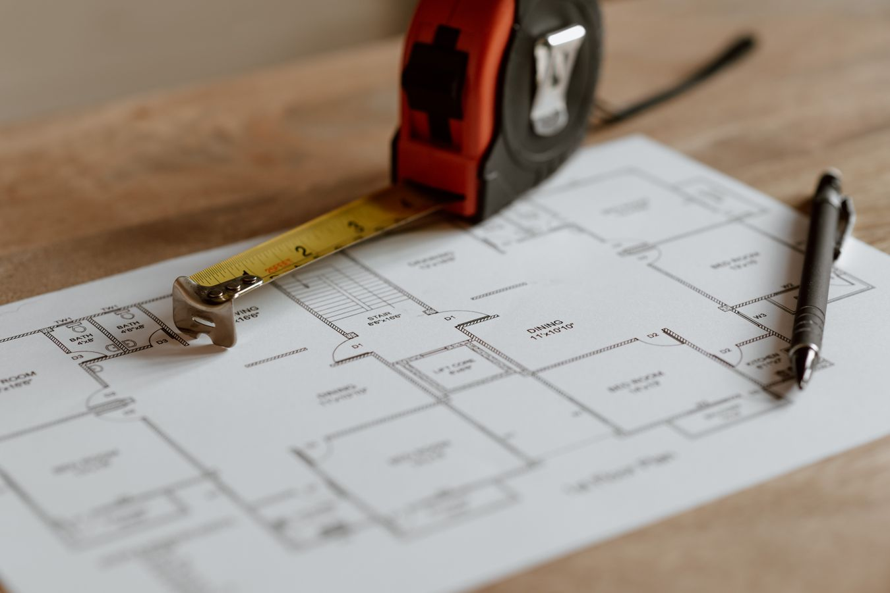
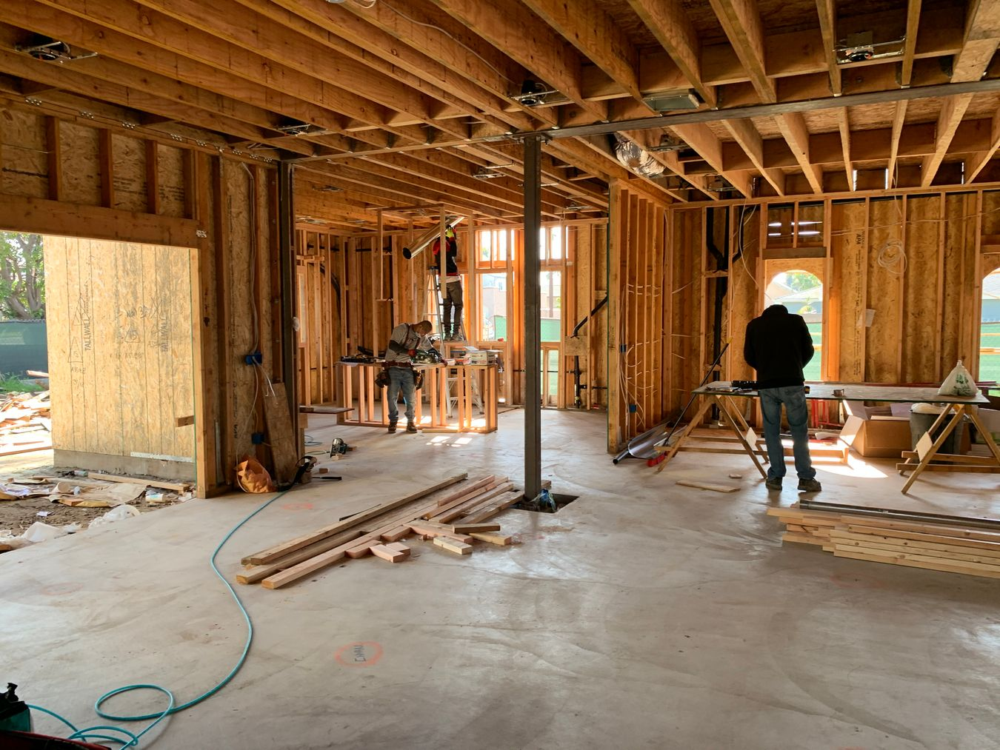

General renovation article. Reno Rise focuses on basement renovations and legal secondary suites. Dollar figures and timelines in this article are illustrative planning ranges from general industry information. They are not quotes, may be out of date, and have not been independently verified by Reno Rise. Get itemized quotes for your own project, and see our basement cost guide.
Quick answer: a home addition in the GTA typically runs $60,000 to $450,000 depending on size and type. A small bump-out starts around $60,000. A single-storey addition runs $150,000-$280,000. A full second-storey addition can pass $250,000-$450,000.
A house extension is the renovation that makes homeowners nervous for a good reason — it's the one category where "just add a room" quietly means new foundation, new roofline, and a permit application that didn't exist for your last three projects combined. The number swings harder here than almost anywhere else in renovation.
Here's what actually drives home addition cost in the GTA, and why the gap between a bump-out and a second storey is so much bigger than square footage alone explains.

Photo by Anete Lusina on Pexels
What Drives Home Addition Cost in the GTA
Four things separate a $70,000 addition from a $350,000 one: whether it's single or double storey, whether it needs a new foundation section, how much of the existing roofline it ties into, and whether it includes a kitchen or bathroom. Home addition cost climbs fastest when plumbing gets added to a space that never had it, because that means trenching, venting, and inspection cycles that a simple bedroom or office addition skips entirely.
Home extension projects also cost more per square foot than new construction, which surprises people every time. Building a stand-alone structure is simpler than tying a new wall, roof, and foundation into a house that's been settling for 40 years. A professional should walk your property in person before pricing a single wall, because what's under your existing foundation matters as much as what you're building.
Home Addition Cost by Type
Most GTA home additions fall into one of three tiers. Here's what each one actually gets you.
A small extension of 80-150 sq ft, typically expanding a kitchen, bathroom, or bedroom without adding a full room.
A full rear or side addition of 300-600 sq ft, new foundation section, framing, roofline tie-in, and finishes.
Adding an entire second floor, requiring structural reinforcement of the existing first floor and a new roofline.
Home Addition Cost Breakdown by Category
A house extension is really several trades sharing one foundation. Here's what each category runs, and roughly how much of the total it eats on a typical single-storey addition.

Photo by Brett Rogers on Pexels
| Category | Typical GTA Range | % of Budget |
|---|---|---|
| Structural Engineering & Permits | $5,000 – $15,000 | ~7% |
| Foundation & Framing | $35,000 – $70,000 | ~30% |
| Roofing & Exterior Envelope | $20,000 – $45,000 | ~18% |
| Electrical & HVAC Extension | $10,000 – $25,000 | ~12% |
| Plumbing (If Adding a Bath or Kitchen) | $8,000 – $20,000 | ~10% |
| Interior Build-Out & Finishes | $25,000 – $55,000 | ~23% |
2 Storey Addition Cost: Why It's Not Just Double
A 2 storey addition typically runs $250,000 to $450,000 or more — not simply double a single-storey addition's cost, because adding a second floor usually means reinforcing the first floor's structure to carry the new load. It's the difference between building on top of a house and building a house that happens to already have a first floor. Homeowners considering this route almost always benefit from a full whole-home renovation cost comparison first, since a second-storey addition sometimes makes more sense paired with ground-floor updates than done in isolation.
Permits and Timeline for a Home Addition in the GTA
Every home addition that increases a home's footprint or habitable square footage requires a building permit, and most GTA municipalities also require zoning and setback approval before that permit is issued. Permit approval alone typically takes 8-16 weeks depending on the municipality — this is almost always the longest single stretch of the entire project, longer than the actual construction in many cases. Construction itself adds another 3-6 months for a single-storey addition, or 5-9 months for a second storey, once permits are in hand.
Home Additions Across the GTA
House addition cost carries small but real differences by municipality, mostly driven by permit turnaround and lot setback rules rather than labour rates. A home addition in York or a house addition in Etobicoke often moves through permitting faster than downtown lots with tighter setbacks, while house additions in Toronto's older neighbourhoods more often require a minor variance before permit approval, simply because many of those homes were built before current zoning existed. Permit requirements vary across the Greater Toronto Area, so confirm them with your municipality.
Is a Home Addition Worth It Compared to Moving?
In most of the GTA, adding square footage costs less per square foot than buying a larger home, once land transfer tax, realtor commissions, and moving costs are factored into the comparison. The math changes if the addition pushes your home's total value well past what similar homes on your street sell for — at that point, you're building equity the neighbourhood won't fully price in when you eventually sell.
Frequently Asked Questions
How much does a home addition cost in the GTA?
Most GTA home additions run $60,000-$450,000 depending on size and type. A small bump-out addition typically costs $60,000-$110,000. A single-storey rear or side addition runs $150,000-$280,000. A full second-storey addition can pass $250,000-$450,000.
How much does a house extension cost per square foot in the GTA?
A house extension typically runs $250-$450 per square foot, higher than new construction because it involves tying into an existing foundation, roofline, and mechanical systems.
How much does a 2 storey addition cost?
A 2 storey addition typically costs $250,000-$450,000 or more, since it requires new foundation work, structural engineering, and a full roofline tie-in, on top of double the square footage of a single-storey addition.
Do I need a permit for a home addition in Ontario?
Yes. Any addition that increases a home's footprint or habitable square footage requires a building permit, and in most GTA municipalities also requires zoning and setback approval before the permit is issued.
How long does a home addition take from permit to completion?
Permit approval alone typically takes 8-16 weeks depending on the municipality. Construction adds another 3-6 months for a single-storey addition, or 5-9 months for a second-storey addition, once permits are in hand.
Is a home addition worth it compared to moving?
In most of the GTA, adding square footage costs less per square foot than buying a larger home once land transfer tax and realtor commissions are factored in, provided the addition doesn't push the home's total value well past the ceiling for its street.
Explore related cost guides and services: